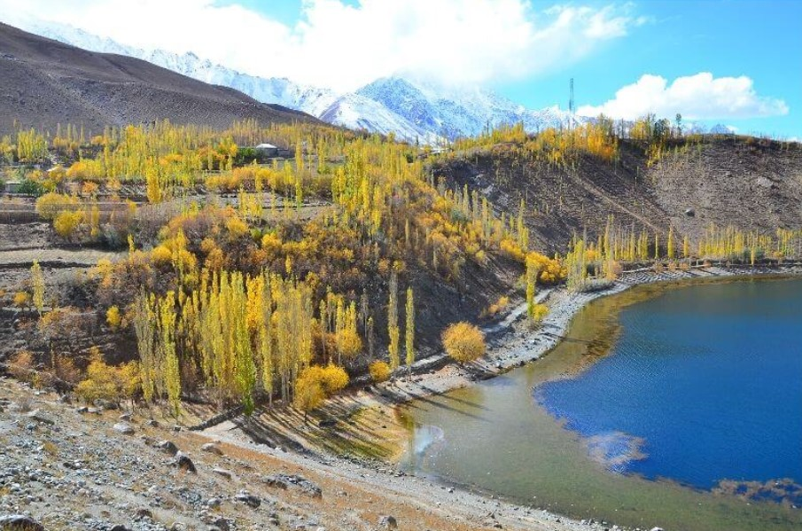

Phander Lake is situated in the Phander Village, in Koh-i-Ghizer, Gupis-Yasin District, the westernmost part of the Gilgit–Baltistan region and northernmost territory of Pakistan. This lake is an important source of fresh water.
Swat District is a district in the Malakand Division of Khyber Pakhtunkhwa, Pakistan. With a population of 2,309,570 per the 2017 national census, Swat is the 15th-largest district of Khyber Pakhtunkhwa province.

Yarkhun is an administrative unit, known as Union Council, of Chitral District in the Khyber Pakhtunkhwa province of Pakistan. The valley consists of 39 villages and hamlets ranging from Breb to Broghill towards the north. The village of Bang is the headquarters of the Yarkhun Union Council.